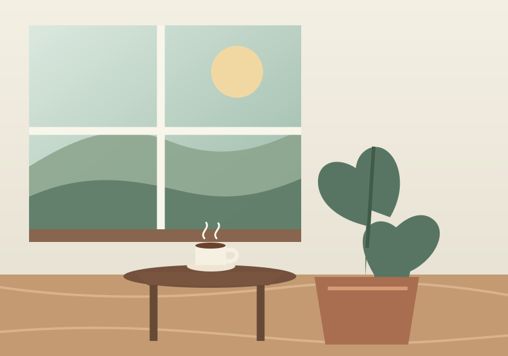

認真選豆
從咖啡豆開始，重視風味與品質，讓每一杯都有自己的香氣和個性。
ABOUT BLUE SKY
藍天咖啡相信，一杯咖啡不只是提神，也是給生活的一個小小停頓。
OUR STORY
我們想像一個地方：咖啡香自然地飄散，陽光落在桌邊，來的人不需要趕著做什麼。於是，藍天咖啡把這份對日常的想像，放進每一杯咖啡與每一個角落。
這裡的故事沒有複雜的規則。你可以和朋友分享近況，也可以只是坐一會兒，聽聽自己的心情。希望每次停留，都能帶著一點安穩回到日常。
讓咖啡，陪你慢下來。
WHAT WE BELIEVE
不求複雜，只希望每一杯
都保有真誠與舒服。
從咖啡豆開始，重視風味與品質，讓每一杯都有自己的香氣和個性。
烘焙與沖煮都留意細節，以穩定而用心的手法，呈現咖啡原有的風味。
用舒服、不打擾的空間迎接每位客人，讓每一種停留方式都剛剛好。
COME SAY HELLO